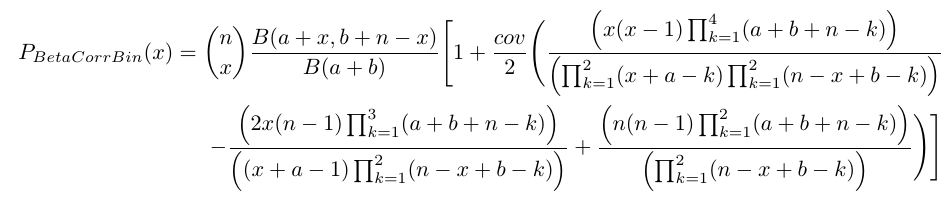
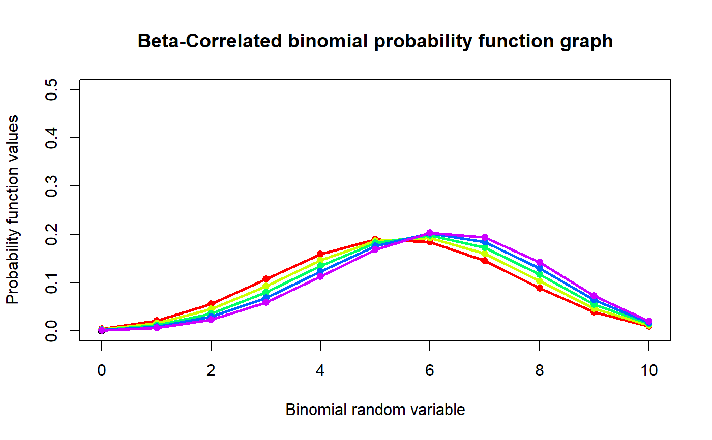
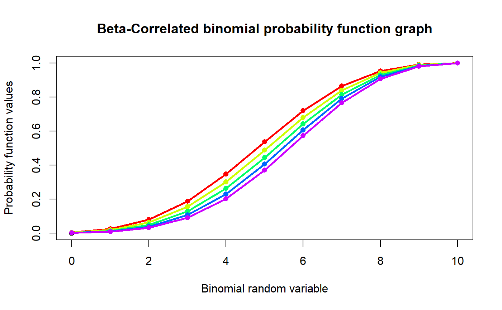

These functions provide the ability for generating probability function values and cumulative probability function values for the Beta-Correlated Binomial Distribution.
pBetaCorrBin(x,n,cov,a,b)
| x | vector of binomial random variables. |
|---|---|
| n | single value for no of binomial trials. |
| cov | single value for covariance. |
| a | single value for alpha parameter |
| b | single value for beta parameter. |
The output of pBetaCorrBin gives cumulative probability values in vector form.
The probability function and cumulative function can be constructed and are denoted below
The cumulative probability function is the summation of probability function values.

$$x = 0,1,2,3,...n$$ $$n = 1,2,3,...$$ $$-\infty < cov < +\infty $$ $$0< a,b$$ $$0 < p < 1$$
$$p=\frac{a}{a+b}$$ $$\Theta=\frac{1}{a+b}$$
The Correlation is in between $$\frac{-2}{n(n-1)} min(\frac{p}{1-p},\frac{1-p}{p}) \le correlation \le \frac{2p(1-p)}{(n-1)p(1-p)+0.25-fo} $$ where \(fo=min (x-(n-1)p-0.5)^2 \)
The mean and the variance are denoted as $$E_{BetaCorrBin}[x]= np$$ $$Var_{BetaCorrBin}[x]= np(1-p)(n\Theta+1)(1+\Theta)^{-1}+n(n-1)cov$$ $$Corr_{BetaCorrBin}[x]=\frac{cov}{p(1-p)}$$
NOTE : If input parameters are not in given domain conditions necessary error messages will be provided to go further.
Paul, S.R., 1985. A three-parameter generalization of the binomial distribution. Communications in Statistics - Theory and Methods, 14(6), pp.1497-1506.
Available at: http://www.tandfonline.com/doi/abs/10.1080/03610928508828990.
#plotting the random variables and probability values col<-rainbow(5) a<-c(9.0,10,11,12,13) b<-c(8.0,8.1,8.2,8.3,8.4) plot(0,0,main="Beta-Correlated binomial probability function graph",xlab="Binomial random variable", ylab="Probability function values",xlim = c(0,10),ylim = c(0,0.5))for (i in 1:5) { lines(0:10,dBetaCorrBin(0:10,10,0.001,a[i],b[i])$pdf,col = col[i],lwd=2.85) points(0:10,dBetaCorrBin(0:10,10,0.001,a[i],b[i])$pdf,col = col[i],pch=16) }#> [1] 0.010992133 0.047498928 0.108466364 0.170474118 0.202669472 0.189491674 #> [7] 0.140699312 0.081828892 0.035693121 0.010567136 0.001618852#> [1] 4.347826#> [1] 3.469017#> [1] 0.004069231#> [1] -0.01709402#> [1] 0.2145215#plotting the random variables and cumulative probability values col<-rainbow(5) a<-c(9.0,10,11,12,13) b<-c(8.0,8.1,8.2,8.3,8.4) plot(0,0,main="Beta-Correlated binomial probability function graph",xlab="Binomial random variable", ylab="Probability function values",xlim = c(0,10),ylim = c(0,1))for (i in 1:5) { lines(0:10,pBetaCorrBin(0:10,10,0.001,a[i],b[i]),col = col[i],lwd=2.85) points(0:10,pBetaCorrBin(0:10,10,0.001,a[i],b[i]),col = col[i],pch=16) }pBetaCorrBin(0:10,10,0.001,10,13) #acquiring the cumulative probability values#> [1] 0.01099213 0.05849106 0.16695742 0.33743154 0.54010101 0.72959269 #> [7] 0.87029200 0.95212089 0.98781401 0.99838115 1.00000000